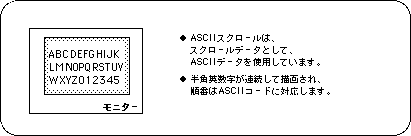
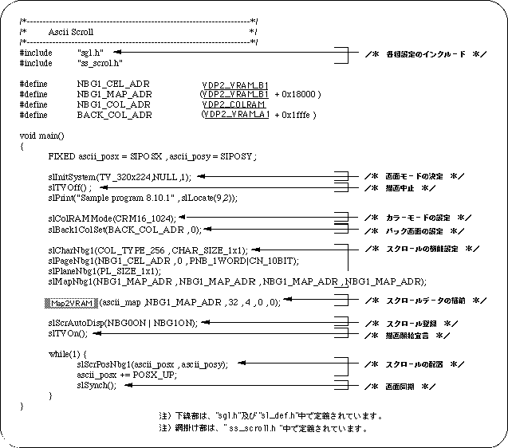

Return to previous page | Return to menu | Go to next page
Sega Saturn has several special scrolls in addition to the normal scroll function. Of these, the SGL library function supports the ASCII scroll function and the transparent color bit control function.
The ASCII scroll function means that data called ASCII cells is used as character pattern data instead of normal scroll character pattern data. An ASCII cell is a so-called ASCII data (ABCDEFG ... XYZ) converted to a data format (cell data) that can be used for scrolling.

In SGL, ASCII cells are stored in VRAM at the system initialization stage.
ASCII scroll can be used by using this data when the normal scroll function is set.
The ASCII scroll is in the system initialization state, is composed of 128 cells and 256 colors, and is set to use the normal scroll screen “NBG0”. ASCII scroll data is stored in the following RAM area.
Character data: 2000H from address 0x25e60000 Map data: From 0x25e76000 to 1000H Pallet data: 20H from 0x25f00000
Caution
If for some reason other scroll data is written in the above area, the ASCII scroll will be replaced with that data, so it will be drawn in a different (incorrect) state from the default.
The following sample program (Listing 8-7) is an ASCII scroll drawn on the TV screen.
